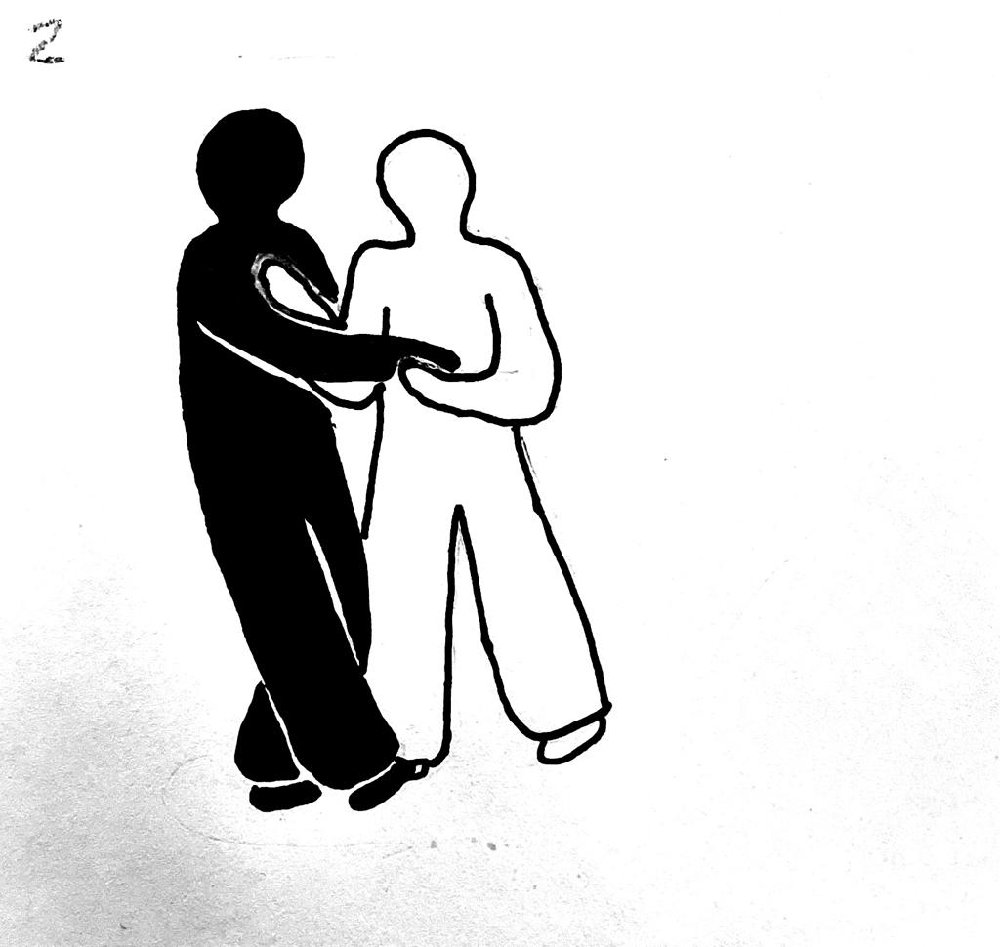

Saber contar historias mediante una secuencia de imágenes constituye una habilidad inestimable no solo para cineastas, dibujantes de cómics y novelistas gráficos, tino también para todo diseñador que trabaje con el tiempo y la interactividad. El propósito de un storyboard consiste en explicar acciones con una serie de imágenes concisas. Para desarrollar un storyboard, los diseñadores tiene que planear el arco de una narración y decidir cómo resumir esa historia en un número limitado de fotogramas (Lupton, 2021, p.34).